@alwa
Основной бренд-аккаунт
Сценарии
CONTENT • DIGITAL • PRODUCTION • PROJECT MANAGEMENT
ПОРТФОЛИО / 2026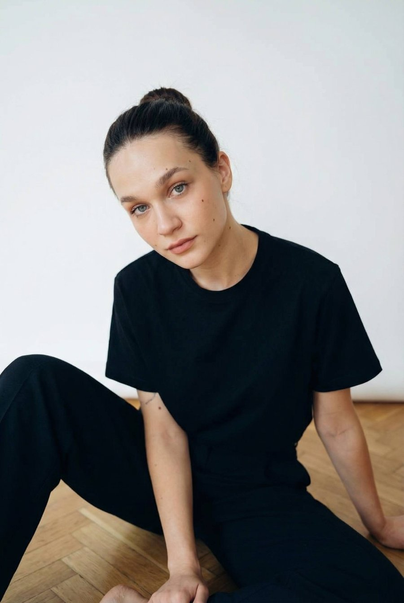
Работаю с контентом от погружения в продукт и аудиторию до готового материала и анализа результатов. Пишу, продюсирую съёмки, выстраиваю процессы и управляю командами.
Я контент-продюсер с бэкграундом в большом кинопроизводстве.
Работаю на стыке контента, digital и production: погружаюсь в продукт и аудиторию, разрабатываю контент-направления, пишу сценарии и тексты, организую съёмки, координирую команды и отслеживаю эффективность контента.
До digital несколько лет работала в крупных кинокомпаниях над полнометражными прокатными фильмами. Этот опыт дал мне сильную production-базу: управление командами, бюджетами, сроками, подрядчиками и форс-мажорными ситуациями.
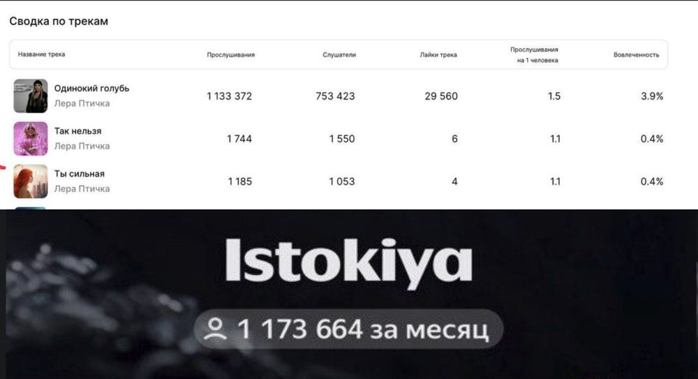
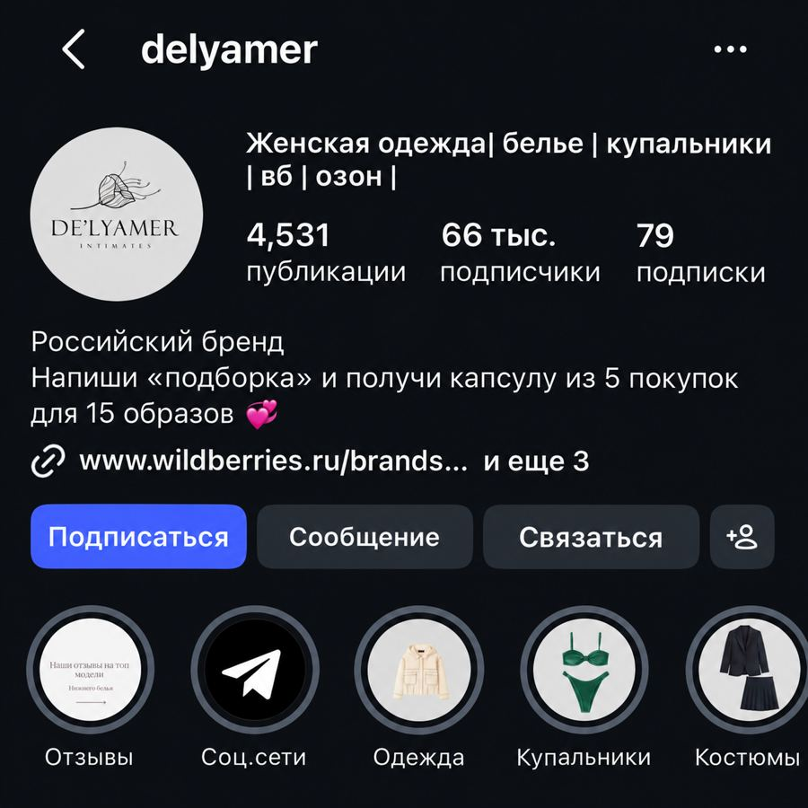
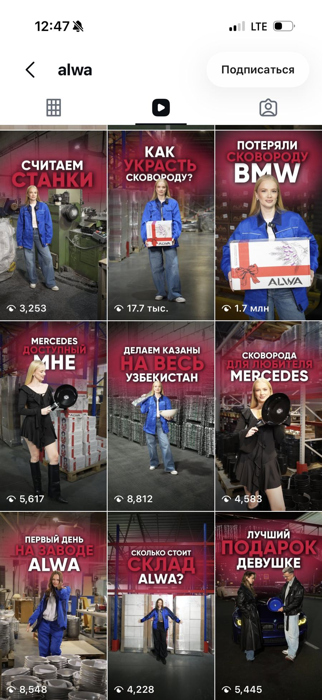
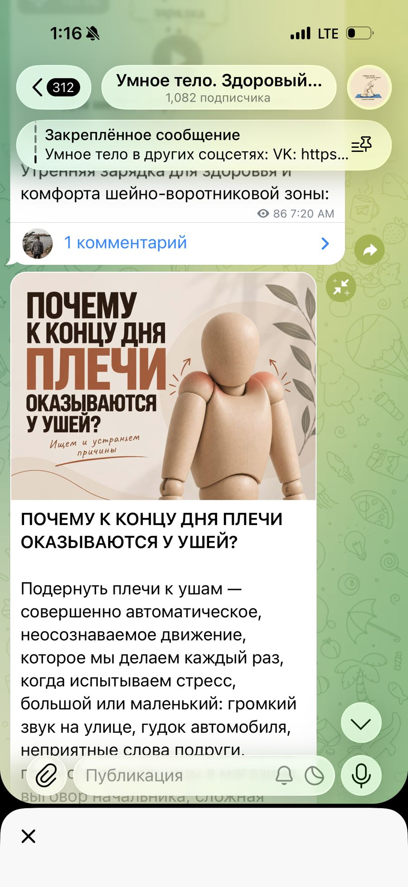
Линейный / исполнительный продюсер
Писала и продюсировала контент для проектов с разной аудиторией, продуктами и задачами.
01 / ISTOKIYA MUSIC LAB
Content Production • SMM • PRНа старте у артиста уже была большая база подписчиков и сильные инфоповоды, но социальные сети не работали системно. Контент выходил нерегулярно, а охваты находились в районе 2–4K.
Я выстроила регулярное производство контента и постепенно расширила свою зону ответственности на PR и работу с инфоповодами.
Я писала сценарии, проводила интервью с артистом, координировала рилсмейкера и монтажёра, отбирала и размечала материал выступлений для монтажа, тестировала новые форматы и выстраивала контент-план для нескольких площадок.
Стратегия опиралась на реальные события и достижения: участие в «Голосе», живые выступления, успешные треки, кастинги и «Новую волну». Контент и PR усиливали эти инфоповоды и продлевали их жизнь в социальных сетях.
РЕЗУЛЬТАТ
ИЗБРАННЫЕ REELS
02 / КРЕАТИВНОЕ АГЕНТСТВО «Ё»
Контент-продюсерВ агентстве я одновременно вела 2–5 клиентских проектов. Мы глубоко погружались в каждый продукт, его аудиторию, позиционирование и ценности бренда, а затем переводили это понимание в контент.
Для Delyamer я проводила интервью с реальными покупателями бренда. На основании этих разговоров мы уточняли аудиторию, её запросы и восприятие продукта и уже после этого переходили к разработке контента.
Я писала сценарии и ТЗ, собирала сметы, участвовала в кастинге, организовывала съёмки и сопровождала монтаж до финальной сдачи.
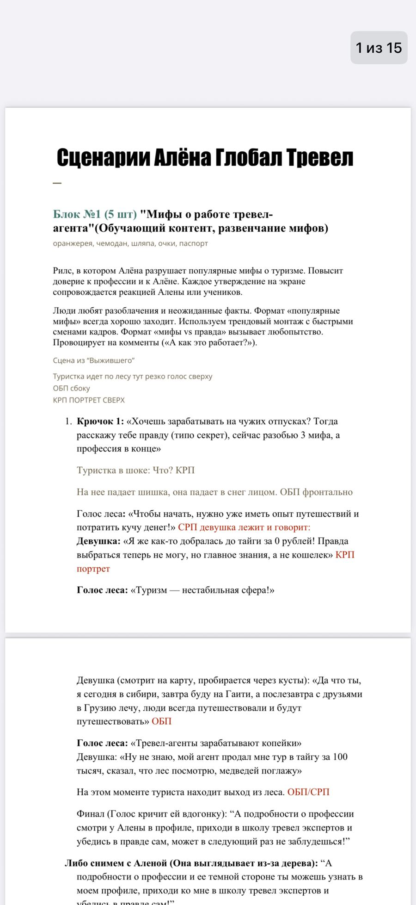
После публикации я отслеживала просмотры, охваты и эффективность форматов. Эти данные использовала для корректировки следующих циклов контента.
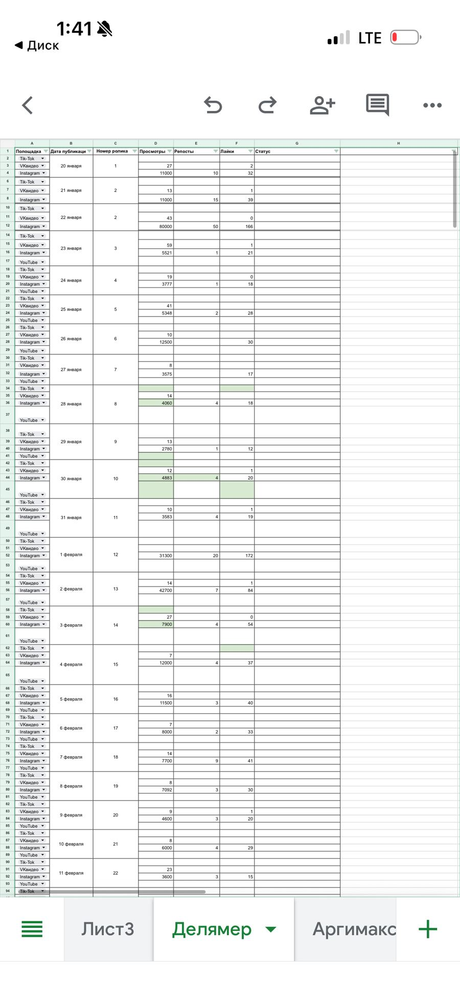
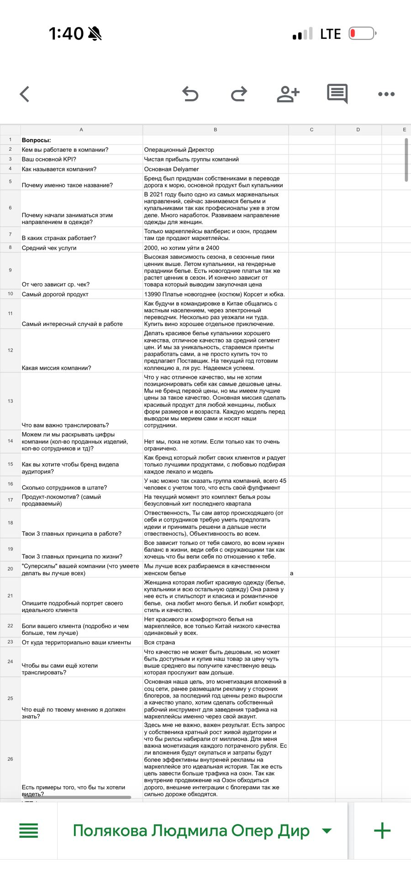
ДРУГИЕ ПРОЕКТЫ АГЕНТСТВА
03 / ALWA
E-commerce / Контент-заводЗадачей было масштабировать производство short-form контента и связать его эффективность не только с просмотрами, но и с переходами к конкретным товарам.
Основной бренд-аккаунт
Сценарии
UGC / Контент амбассадоров
Запуск с нуля
Лайфстайл / Развлекательный контент
Полный production с нуля
Для новых аккаунтов я выстраивала полный production-цикл: сценарии, подбор героев и форматов, постановка задач съёмочной команде, контроль производства и монтажа.
Для основного аккаунта ALWA отвечала за сценарную часть.
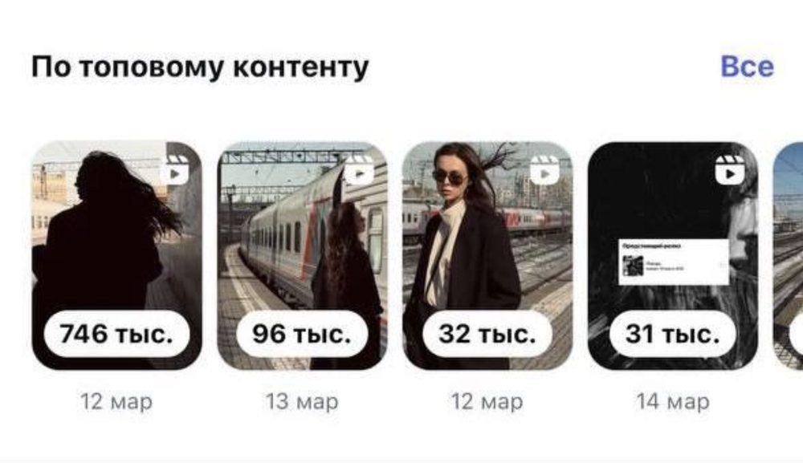
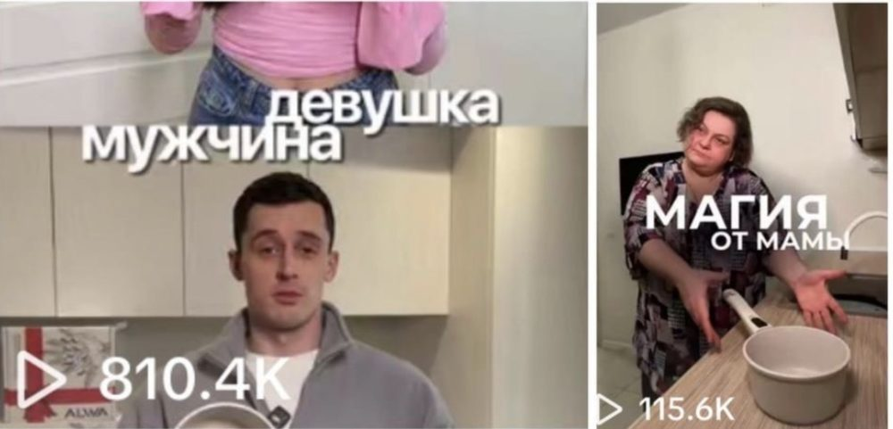
Для UGC-контента использовались индивидуальные реферальные идентификаторы — в аналитике каждый переход к товару на маркетплейсе связывался с конкретным роликом.
Топовые ролики: 810,4 тыс. просмотров (формат «девушка/мужчина»), 746 тыс. охвата и 96 тыс. / 32 тыс. просмотров на других роликах топ-контента, 1,7 млн на «Потеряли сковороду BMW». Стоимость привлечения тысячи просмотров (CPM) снизилась с 629 ₽ до 182 ₽ за месяц работы — то есть при том же бюджете контент стал приводить в 3+ раза больше трафика на продукт.
04 / УМНОЕ ТЕЛО. ЗДОРОВЫЙ МОЗГ
Content • Products • Sales • Digital InfrastructureНа старте контент, продукты и продажи существовали разрозненно. Моей задачей стало собрать их в единую систему, которой удобно пользоваться и эксперту, и покупателю.
Контент-план, рубрики, тексты, визуальная система и упаковка продуктов.
Создание и запуск трёх новых образовательных продуктов.
Воронки продаж на основе лид-магнитов, вебинаров, Telegram-ботов и рассылок.
Я разработала сайт проекта, связала его с GetCourse и собрала образовательные продукты на этой платформе, создав более понятную систему для эксперта и покупателей.
Я не только организую производство контента. Я сама пишу сценарии, посты и short-form форматы и могу довести их от идеи до готовой публикации.
От идеи до монтажного ТЗ:
hook → структура → реплики → визуальная подача → референсы → CTA
05 / КИНОПРОИЗВОДСТВО
До контент-продюсирования я несколько лет работала в крупных кинокомпаниях: полнометражные прокатные фильмы, команды в сотни человек, сложная логистика и множество производственных форс-мажоров, которые нужно было решать здесь и сейчас.
Этот опыт стал основой того, как я сейчас работаю с production и digital-проектами: выстраиваю процессы и довожу производство до результата.
НАШЕ КИНО × КИНОФИРМА
5 полнометражных прокатных фильмов
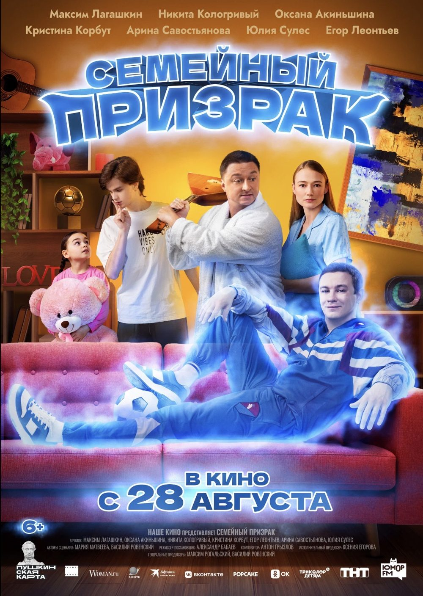
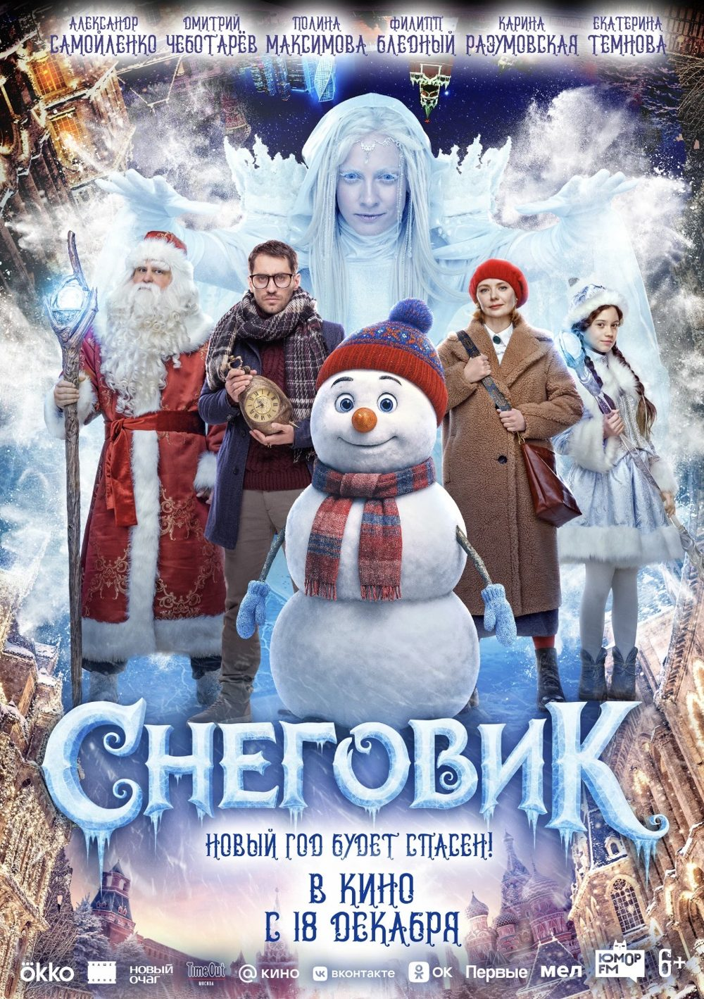
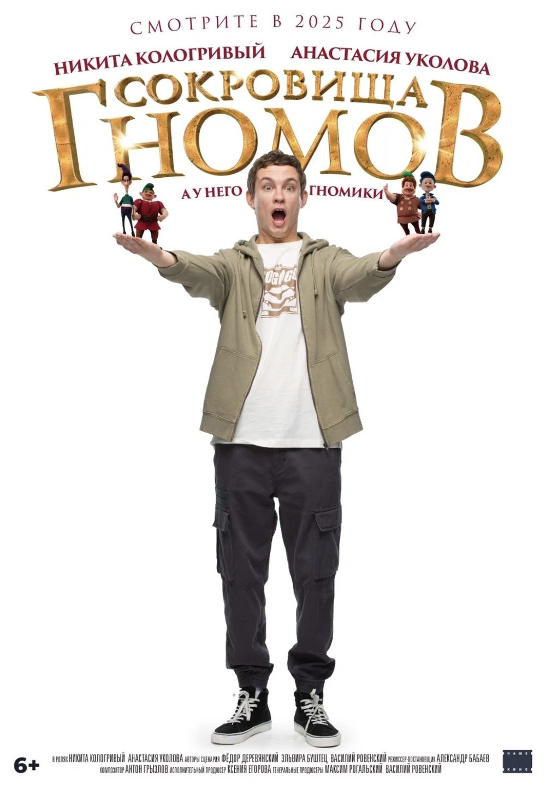
Я работала на всех пяти проектах от подготовки до завершения съёмочного периода: документация и финансовые процессы, координация площадки, работа с артистами и агентами, райдеры, логистика и решение производственных форс-мажоров.
BERGSOUND
Линейный продюсер
Полнометражный проект: работа с документацией, производственной координацией, площадкой, командой и повседневными задачами производства.
METEOR STUDIO
На проекте я совмещала работу исполнительного продюсера и частично закрывала функции локейшн-менеджера и кастинг-директора.
Вместе с командой мы добились согласования первой творческой киносъёмки непосредственно на территории Московского зоопарка. Я также сопровождала финансовую и документальную отчётность проекта, снимавшегося при государственной поддержке Министерства культуры Российской Федерации.
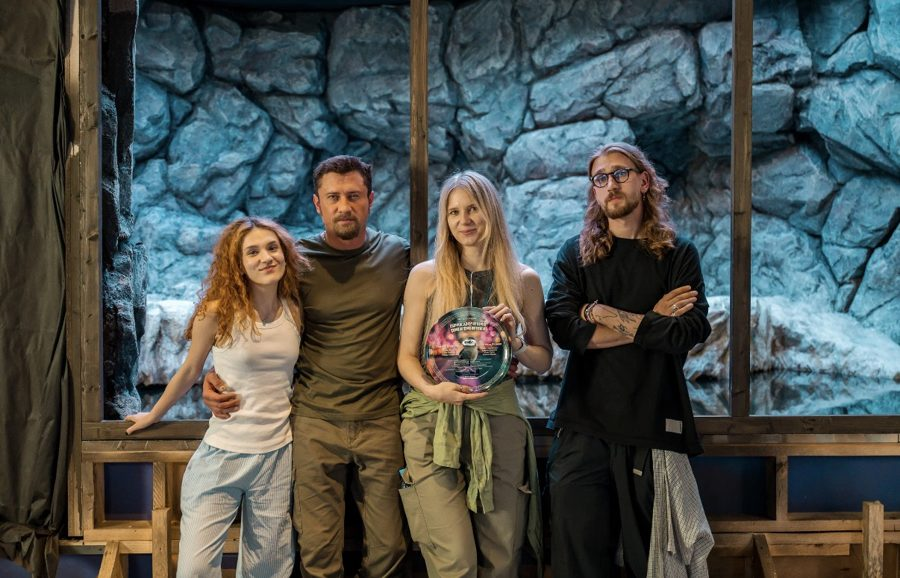
TECH PRODUCTION × RUNWAY MEDIA
Исполнительный / креативный продюсер
Музыкальные клипы, реклама, коммерческие съёмки, короткий метр и другие production-проекты.
IML PRODUCTION
Сопровождение клиентов и проектов на этапе постпродакшна: коммуникация, документы и координация между клиентом и командами звука, цветокоррекции и графики.
ПОЛНОЕ ПОРТФОЛИО06 / КОНТАКТЫ
SMM / CONTENT PRODUCER
CONTENT • DIGITAL • PRODUCTION • PROJECT MANAGEMENT